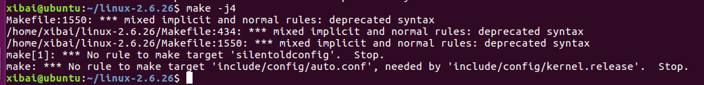
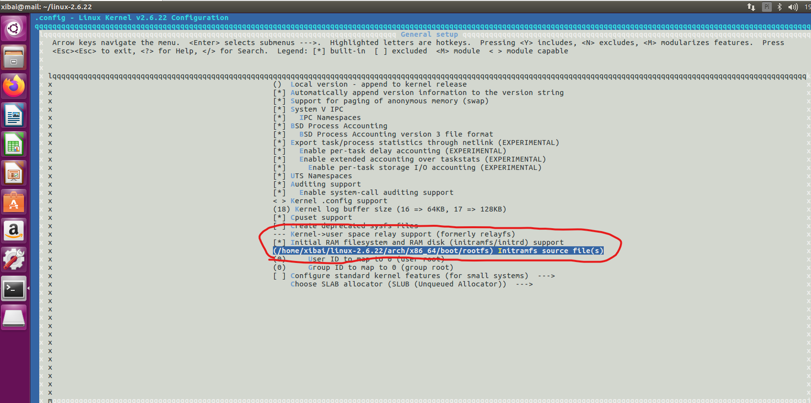
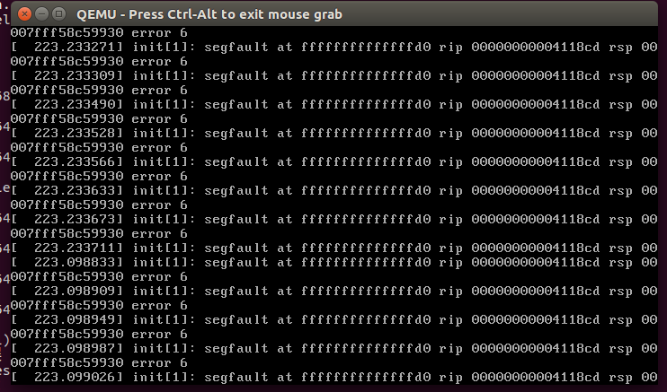
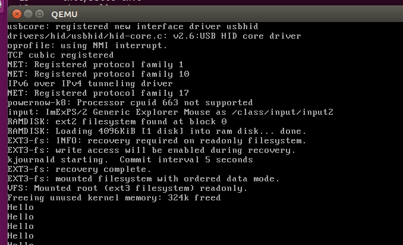

Qemu_use-Log
~找到一个 09 年的工具仓库，建议本文直接废弃555~
qemu
QEMU 是一个快捷的跨平台开源计算机模拟器，可以模拟许多硬件体系结构（在模拟固件设备时操作非常方便，一般IoT设备的虚拟机往往使用qemu来模拟）。QEMU 可让您在现有系统（VM 主机服务器）之上运行未经修改的完整操作系统 (VM Guest)。您还可以使用 QEMU 进行调试 — 可以轻松停止正在运行的虚拟机、检查其状态、保存并在以后恢复其状态。
QEMU 主要由以下部分构成：
- 处理器模拟器。
- 模拟的设备，例如显卡、网卡、硬盘或鼠标。
- 用于将模拟的设备连接到相关主机设备的通用设备。
- 调试器。
- 用来与模拟器交互的用户界面。
linux-2.6.22kernel记录
- 主机：win10 x64
- VM：Ubuntu1604
- 目标内核版本：Linux-2.6.22
内核编译
Ubuntu 安装 make menuconfig 指令的依赖：apt-get install libncurses5-dev。
CentOS 安装 make menuconfig 指令的依赖：yum install ncurses ncurses-devel。
Makefile问题
版本差距太大，Makefile 存在个别地方语法的不兼容，借此顺便看了下 Makefile 的相关语法学习。
先放总结：make其实可以当作一个特制的shell执行器。对于中型or大型 c/c++ 项目而言，因为头文件、依赖文件、各模块源码文件过多，如果每次编译都去手敲一次命令，非常不便且容易出错。于是就制作了 make 工具。
make工具的主要功能，将数量庞大的 gcc编译命令 格式化脚本化。格式化也就是相当于写个通项，然后根据这个通项自动生成每一条编译命令继而执行。模块化是对于不同的编译场景用户会有不同的编译需求，通过配置文件来将这些需求分化为不同的配置模块、命令模块、使其操作变得傻瓜化。
1 | A: B |
A 代表所要编译生成的目标、B代表该目标的依赖文件（头文件、源码文件等等凡是用到的都可以是）、C代表具体的编译命令（也可以是一些 shell 中执行的命令）
当B集合中的文件时间戳发生变化，则make会对目标文件进行重新编译；否则make会跳过该目标的编译直接执行下一个目标的编译。
在Makefile中支持shell的一些基础语法，且make内置了一些功能函数。这里不多赘述
参考链接：
- <https://blog.51cto.com/u_15127598/4090088>
- <https://zhuanlan.zhihu.com/p/442028798>
需要解决的地方：

1 | # 415 行，对应报错信息 |
这里删除第一个 config 和 / ，如下：
1 | # 415 |
内核配置问题
如果是2.6.26版本的内核，会遭遇报错：
1 | ~/linux-2.6.26$ make -j4 | grep error |
修改 arch/x86/vdso/Makefile 中 -m elf_x86_64 为 -m64 -m elf_i386 -m32。
继续编译：
1 | Error: .size expression for copy_user_generic_c does not evaluate to a constant |
去对应的源码文件查看错误出处
1 | ENTRY(copy_user_generic_string) |
可以发现是头尾名字不对应，copy_user_generic_c 改为 copy_user_generic_string。
往后是通用报错
而后再次编译得到：
1 | kernel/built-in.o: In function 'mutex_lock': |
跟踪源码发现，CONFIG_DEBUG_MUTEXES 影响了头文件的包含，与其有关：
1 |
grep -r 搜索其出现的位置，找到如何影响的：
1 | grep -r CONFIG_DEBUG_MUTEXES . |
在配置文件中设置为 y 。继续编译:
1 | arch/x86_64/boot/compressed/misc.o: In function 'inflate_fixed': |
该报错是因为默认开启了栈保护策略，在 Makefile 中找到内核模块的编译参数，添加 --fno-stack-protector
1 | CHECKFLAGS := -D__linux__ -Dlinux -D__STDC__ -Dunix -D__unix__ -Wbitwise $(CF) |
出现以下内容说明内核编译完成
1 | Root device is (8, 1) # |
qemu 运行
为其制作基础文件系统。
先准备一个 init 程序。比如：1
2
3
4
5
6
7
8
9
int main() {
while (1) {
printf("Hello\n");
sleep(1);
}
}
然后制作虚拟介质并挂载。用 VM 类比就是 虚拟硬盘
1 | dd if=/dev/zero of=myinitrd.img bs=4M count=1 |
这里刚制作的虚拟介质是空白的，需要填充文件系统的必要内容。
1 | sudo cp init rootfs/ |
mknod 用于创建设备文件。
- 参数为
b时面向设备驱动，Linux下万物皆文件，通过该文件访问硬件驱动从而使用该硬件。 - 参数为
c是面向字符。比如与打印机、控制台进行数据交互。 - 两个数字参数分别是主从设备号。在 Linux 下，设备集通过主设备号分类，每一个主设备号对应一大类设备的驱动，比如
b 1就代表ramdisk类型的设备；从设备号代表该类型设备集中具体的某个设备的序号。
通过对应架构的qemu运行内核及刚制作的简易文件系统
1 | qemu-system-x86_64 -kernel path/bzImage -initrd path/myinitrd.img -m 512M --append "root=/dev/ram init=/init" |
bzImage 是linux的内核镜像文件。是make编译时自动生成好的。内核文件的编译会有三个阶段，第一阶段是“裸内核”静态elf文件的编译生成；第二阶段会将其和 boot 程序 压缩成一个二进制文件 vmlinux.bin；第三阶段 会生成 bzImage 或者说 vmlinuz，可引导的压缩linux内核。通过 gzip 进行压缩。
参考：
- https://zhuanlan.zhihu.com/p/466591309
- https://www.shuzhiduo.com/A/RnJWm6GEdq/
- http://t.zoukankan.com/ldxsuanfa-p-9952120.html
- https://blog.csdn.net/baidu_31504167/article/details/93606946
qemu启动过程中报错：提示挂载文件系统过程中不能识别到 gzip header，即 myinitrd.img 应该使用 gzip 压缩算法，这里先 直接 gzip 将其压缩一下康康什么效果。
发现这次提示找不 cpio magic header。查阅资料得知，linux2.6 内核支持两种格式的 initrd（虚拟文件系统），一种是 linux2.4 内核那种传统格式的文件系统镜像 image-initrd，其核心文件就是 /linuxrc；另外一种格式的 initrd 是 cpio 格式的，这种格式的 initrd 使用 cpio 工具生成，其核心文件不再是 /linuxrc，而是 /init。也就是说我们这里使用系统工具生产的虚拟介质其数据格式存在问题。我们手动压缩一个可用文件出来启动一下试试
1 | sudo find path/rootfs -depth -print | cpio -o -Hnewc | gzip -9 > myinitrd.cpio.gz |
挂载成功，但是提示 不能打开 root 设备 ram（1，0）。此时通过 file 命名查看前后两个文件系统文件的属性发现，第一次生成的文件属于硬盘，但第二次就只能算是个压缩归档文件了。推测应该是主设备号对应的驱动不对所以无法正常启动。这里我们可以通过修改 内核配置 的讲文件系统直接编译进内核镜像，让其编译时自动识别并包含。
到源码根路径 make menuconfig，修改 General setup 中选项，如下图：

编译过程中根据编译日志确认是因为主设备号错误导致无法正常启动，压缩文件类的文件系统主设备号使用 8 。
1 | Building modules, stage 2. |
参考：
- https://blog.csdn.net/kunkliu/article/details/104838764
- https://www.cnblogs.com/Andy-Lv/p/5304247.html
再次运行
1 | qemu-system-x86_64 -kernel path/bzImage -m 512M --append "root=/dev/ram init=/init" |

可以看到系统已经运转起来了，但是因为本地内核版本、gcc版本均高于目标，导致本地编译的程序运行时出现段错误异常。除此之外，在真机路由器上面使用较低版本gcc编译的静态程序时也会自检提示 内核版本太老无法运行。
一番苦苦挣扎，成功找到一个 09 年的仓库，存放了当年编译好的 各种架构的 gcc。下载尝试,终于成功运行起来
仓库地址：https://www.uclibc.org/downloads/binaries/0.9.30.1/
